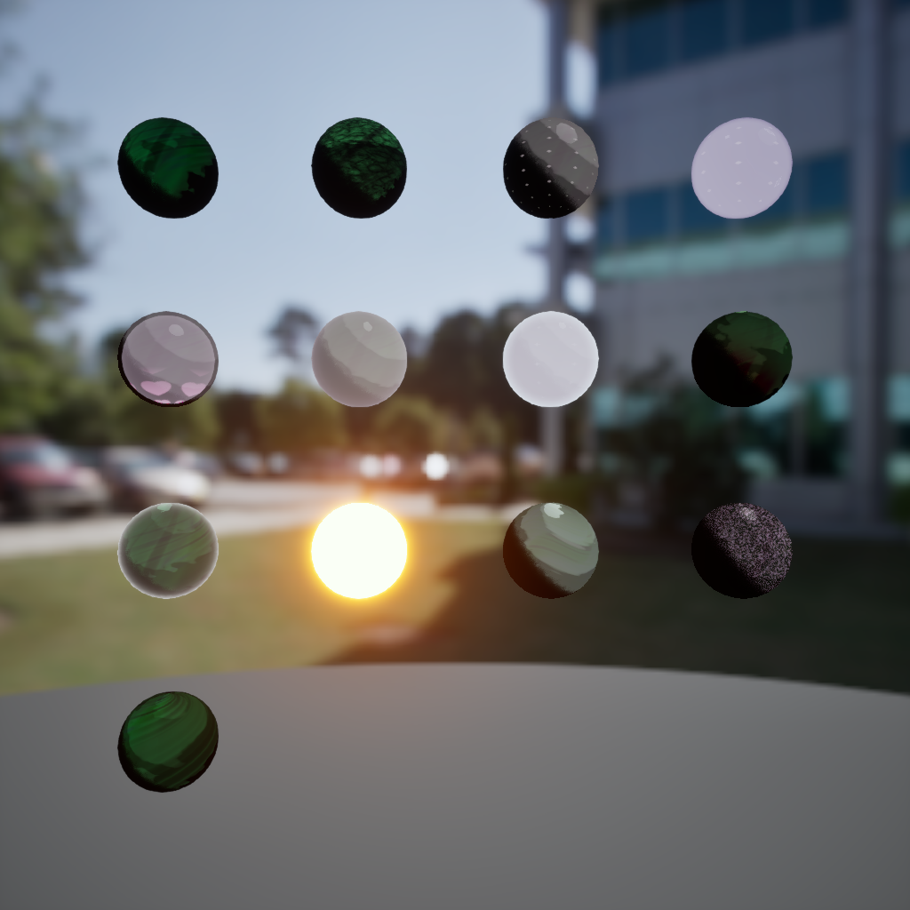
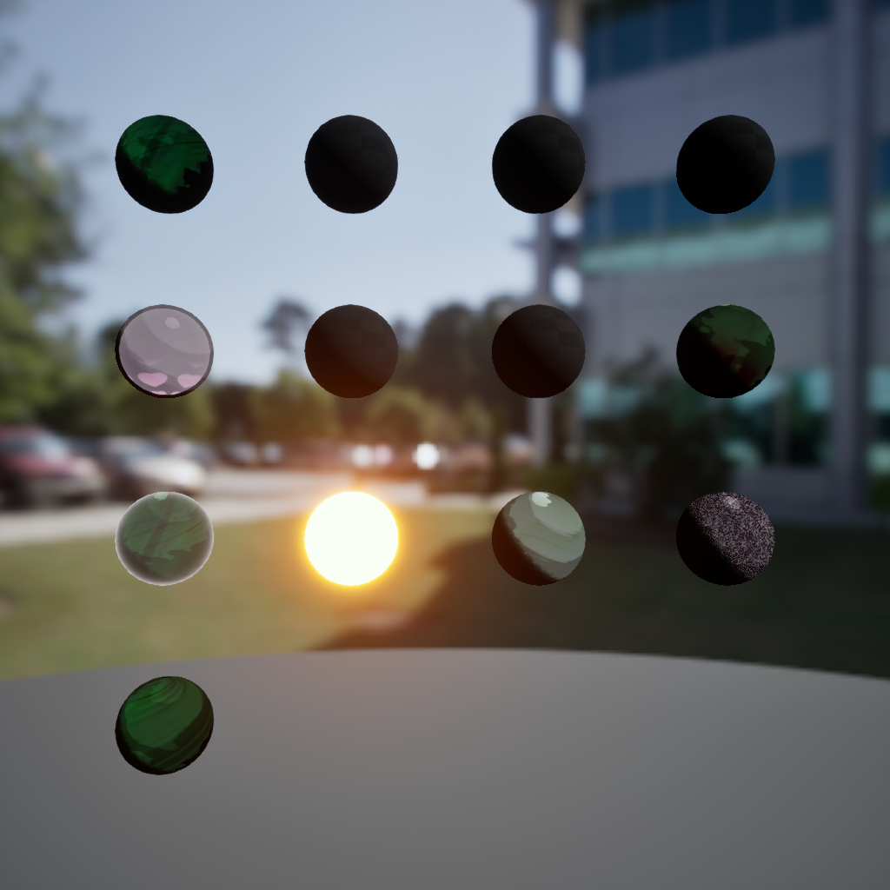

M_Master_Toon_Universal
Layered stylized surfaces — the main proof point for environment materials.
Unreal shaders
Not every graph is finished — but these are the families I'd show an art director. Impact pages tie shaders back to in-scene proof.
The list I'd give myself before a render night.
Layered stylized surfaces — the main proof point for environment materials.
Starmap-driven nebula mood for the cathedral and cosmic orrery pillars.
Iridescence, satin, sparkle masks — reparented instances on M_Master_Toon_Universal.
The old families-review capture was underexposed (checkerboard spheres). These showcase grids are the current proof set until nap-sync previews are re-captured in UE.
Primary swatch plate — cosmic, foliage, ink, hydro, and hero rim reads.

Alternate lighting pass for comparison and recruiter zoom-ins.

Earlier capture from the same material instance set.
Breakdown index
Each link is a different slice — master graph, water, trims, particles, PCG.
Core stylized surface system and instance scope.
Node story — blend, parallax, stylization.
Shoreline, depth, fantasy water controls.
In-scene before/after slots.
Route proof and dressing variation.
How generated meshes get instances.